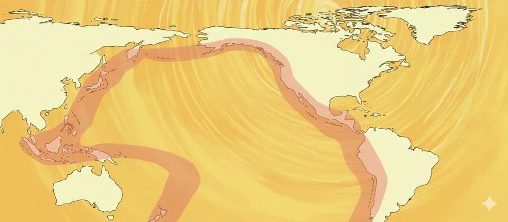
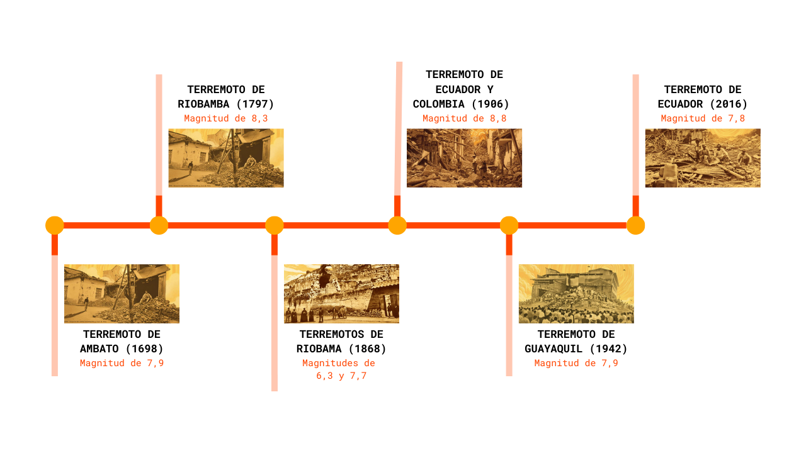

Ecuador es un país soberano ubicado en la región noroccidental de América del Sur. Su idioma oficial es el español junto a otros trece lenguas indígenas. Ecuador tiene una de las más altas concentraciones de ríos por kilómetro cuadrado en el mundo y es uno de los países de mayor biodiversidad por kilómetro cuadrado.
¿POR QUÉ OCURREN LOS SISMOS EN ECUADOR?
Ecuador, ubicado en el Cinturón de Fuego del Pacífico, es una región propensa a la actividad sísmica debido a que este se encuentra en el contacto entre la placa de Nazca (oceánica) y se hunde bajo placa Sudamericana, acumulando energía elástica. Cuando esta energía acumulada se libera repentinamente, ocurren terremotos de tipo "megafalla" o sismos más superficiales asociados a fallas activas en la corteza continental, como la falla de Pallatanga o la Chingual. A lo largo de su historia, el país ha experimentado numerosos terremotos significativos que han dejado una huella profunda en su desarrollo y en la vida de sus habitantes, como los que se presentan a acontinuación.
Sismos desde vista satelital durante el tiempo

Línea cronológica de sismos en Ecuador
Terremoto de Ambato de 1698 (7,9)
El terremoto de Ambato de 1698 afectó al interior del Ecuador el 20 de junio de 1698 a la 01:00 hora local. La magnitud sísmica del terremoto osciló entre 7,5 y 7,9.Los daños fueron generalizados y extremos en las provincias de Tungurahua, Cotopaxi y Chimborazo. El terremoto también provocó flujos de lodo a lo largo del río Ambato que destruyeron una ciudad y mataron a muchos residentes. Se estima que 6.500 muertes se atribuyeron al terremoto y miles más a los deslizamientos de tierra.
Terremoto de Riobamba de 1797 (8,3)
El terremoto de Riobamba de 1797 se produjo a las 12:30 UTC del 4 de febrero. Devastó la ciudad de Riobamba (en su antiguo emplazamiento, donde ahora está la ciudad de Cajabamba), y muchas otras ciudades en el valle interandino, causando hasta 40.000 muertes. Se estima que las intensidades sísmicas en la zona epicentral alcanzaron al menos XI en la escala de Mercalli, y que el sismo tuvo una magnitud de 8.3,siendo el sismo más poderoso conocido en Ecuador.
Terremoto de Riobamba de 1868 (6,3 y 7,7)
Los terremotos de Ecuador de 1868 se produjeron el 15 de agosto de 1868 a las 19:30 UTC y el 16 de agosto de 1868 a las 06:30 UTC. Tuvieron una magnitud estimada de 6,3 y 7,7 MW. Causaron un total estimado de 5.000 hasta 20.000 víctimas (solo en el territorio ecuatoriano) y severos daños en la parte noreste de Ecuador y en el suroeste de Colombia.
Terremoto de Ecuador y Colombia de 1906 (8,8)
En 1906 hubo un terremoto en Ecuador, que afectó también a Colombia, de 8,8 en potencia de Magnitud de Momento, el más potente en la historia sísmica del país y que causó un tsunami devastador. Otro gran terremoto es el que ocurrió en Ambato, en 1949 de 6,8 en potencia de Magnitud de Momento, siendo un terremoto interplaca. Otro gran terremoto que afectó a Ecuador, ocurrió dentro de la placa de Nazca subducida, en 2010 con 7,1 en potencia de Magnitud de Momento, estos siendo generalmente muy profundos causando un daño masivo.
Terremoto de Guayaquil de 1942 (7,9)
El terremoto de Ecuador de 1942 con epicentro en jama, Manabí, fue un movimiento sísmico que ocurrió el 13 de mayo a las 9:13 a. m. ECT, tuvo una magnitud de 7.9. El terremoto golpeó las regiones costeras de Ecuador, causando daños principalmente en ciudades como Guayaquil, Portoviejo y Guaranda, particularmente en edificios de hormigón armado. Más de 300 personas perdieron la vida. Guayaquil, la ciudad más grande de Ecuador, fue la más afectada a pesar de la importante distancia del epicentro. Muchas estructuras de hormigón armado de la ciudad quedaron completamente destruidas.
Terremoto de Ecuador de 2016 (7,8)
El terremoto de Ecuador de 2016 fue un sismo altamente mortífero que ocurrió a las 18:58:37 hora local del sábado, 16 de abril de 2016, con epicentro entre las parroquias Pedernales y Cojimíes del cantón Pedernales, en la provincia ecuatoriana de Manabí. Con una magnitud de 7,8 constituye el sismo más fuerte sentido en el país desde el terremoto de Colombia de 1979, el más destructivo desde los terremotos de Ecuador de 1987.
ACTIVIDAD SÍSMICA ACTUAL DE ECUADOR
Texto de introducción a los registros de actualidad.
| place | time | mag | tsunami |
|---|
En Japón
| place | time | mag | tsunami |
|---|
En Rusia
| place | time | mag | tsunami |
|---|
ECUADOR COMPARADO CON OTROS PAÍSES
Registros sobre 3.9 M del último mes, comparado con Japón y Rusia
Ecuador es altamente vulnerable a terremotos por estar en una zona de subducción activa: la placa de Nazca se hunde bajo Sudamérica, acumulando tensión que se libera en grandes sismos. A lo largo de su historia ha sufrido eventos muy destructivos pasando por el terremoto de Ambato (1698), Riobamba (1797) hasta Pedernales (2016), entre otros que han sido registrados a lo largo de los años, los cuales han causado miles de muertes, daños severos y destrucción de infraestructura crítica. Estos eventos a pesar de sus efectos impulsan una cultura de riesgo más sólida y trabajada, en donde se desarrolla una reconstrucción resiliente, normativas sísmicas y gestión del riesgo para reducir su vulnerabilidad futura, atributos esenciales para coexistir con su geología y evitar mayores daños en el futuro.
Fuentes:
Control spectra for Quito. (2017, 13 marzo). Natural Hazards And Earth System Sciences. Recuperado 23 de noviembre de 2025: Control spectra for Quito.
Colaboradores de Wikipedia. (s. f.). Anexo:Terremotos en Ecuador - Wikipedia, la enciclopedia libre: Anexos: Terremotos en Ecuador.
Colaboradores de Wikipedia. (2024, 27 mayo). Terremoto de Ambato de 1698. Wikipedia, la Enciclopedia Libre: Terremoto de Ambato de 1698.
Colaboradores de Wikipedia. (2025, 10 agosto). Terremoto de Riobamba de 1797. Wikipedia, la Enciclopedia Libre: Terremoto de Riobamba de 1797.
Colaboradores de Wikipedia. (2025a, agosto 7). Terremoto de Ecuador y Colombia de 1906. Wikipedia, la Enciclopedia Libre: Terremoto de Ecuador y Colombia de 1906.
Colaboradores de Wikipedia. (2025a, agosto 6). Terremoto de Guayaquil de 1942. Wikipedia, la Enciclopedia Libre: Terremoto de Guayaquil de 1942.
Colaboradores de Wikipedia. (2025d, agosto 24). Terremoto de Ecuador de 2016. Wikipedia, la Enciclopedia Libre: Terremoto de Ecuador de 2016.
Referente de ayuda, IA de Google, Géminis.